Satisfactory
First-person factory automation on a beautiful alien world. Build everything.
Review
Satisfactory is Factorio from a first-person, 3D perspective on a hand-crafted alien world — and it is an extraordinary achievement in its own right. You land on an alien planet as an employee of FICSIT Inc., tasked with erecting an industrial automation complex of escalating scale and complexity. Starting with hand-mining ore and crafting components manually, you progress through automated miners, conveyor systems, splitters and mergers, and eventually multi-tiered factories that cover entire mountain ranges.
The visual payoff of Satisfactory's factory building is unlike any other game in the genre. Because you inhabit the world in first person, walking through a functioning factory floor of your own design — conveyor belts carrying components above you, assemblers clicking rhythmically, trains running routes you laid — is genuinely spectacular. The alien world itself is beautiful: diverse biomes, alien fauna, stunning vistas from mountain peaks that reward exploration with unique resources.
The progression curve is steep but intelligently designed. Milestones — unlocking new technologies by delivering specific material packages to FICSIT — create a structured rhythm that prevents aimlessness. The mid and late game require increasingly sophisticated logistics math (how many refineries to feed one manufacturer? How many coal miners per power plant?) that rewards calculation and planning. Update 1.0 completed the story and added finale content. In co-op, the factory-building becomes a shared creative project of extraordinary scale.
Strengths and Limits
- First-person perspective makes your factory visually spectacular to inhabit
- Beautiful, diverse alien world rewards exploration
- Milestone system creates satisfying, structured progression
- Excellent co-op — building together is enormously satisfying
- Factory complexity scales to as much depth as you want
- Mid-game math becomes extremely complex without external planning tools
- Getting lost in your own factory is a genuine and frequent problem
- Late game requires enormous material investments that demand patience
- Alien fauna aggression can disrupt factory operations frustratingly
Reader Fit
This review is written around fit: who should play it, what kind of session it rewards, and what friction might make it wrong for another reader. A high grade does not mean every player should buy it immediately. It means the game has a clear identity, a strong reason to exist, and enough craft to justify attention from the right audience.